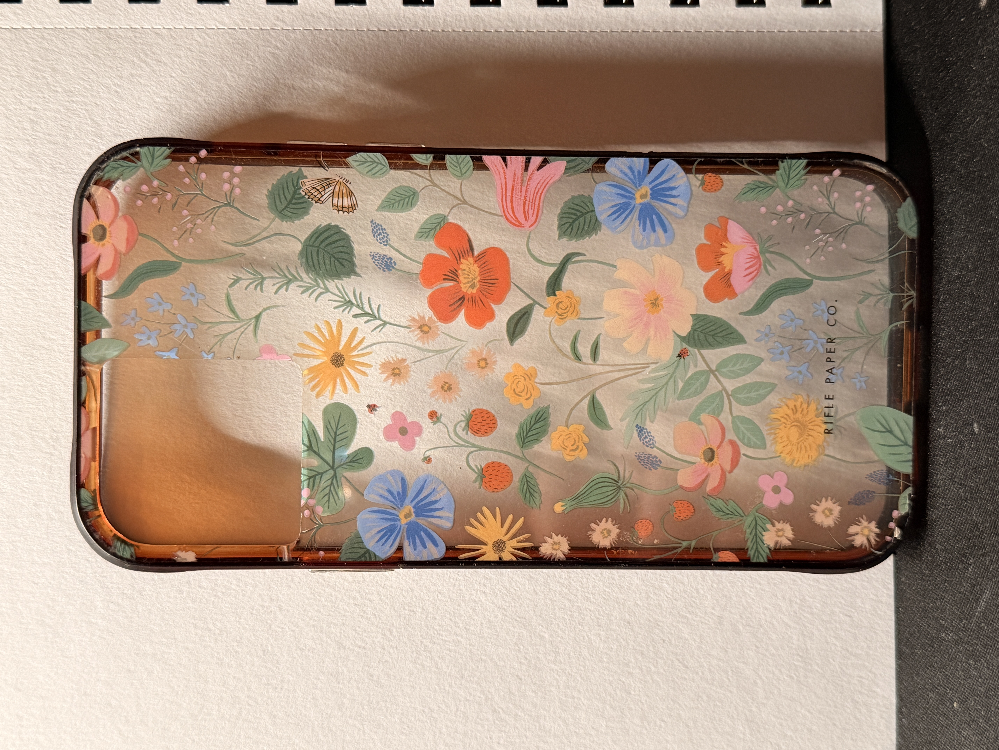
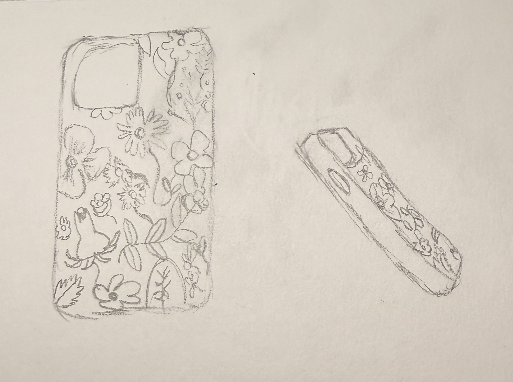

Item of the Week: Lonesome Phone Case
 Description
This is my old iPhone 12 Pro phone case. I've had it since sophomore year of high school, and it's been on my person every day, 24/7 until now. On January 12th, I received a new phone for my birthday. The iPhone I've been carrying around with me and the phone case I trusted to protect it all those years will now be of no use to me anymore. When I traded in my iPhone 12, I needed to remove all the accessories that made the phone mine, including this case. It's a bittersweet feeling, like I'm entering a new chapter, with a new phone and case. I look down to pick up my new phone, but it feels so different, like a stranger. A part of me feels bad throwing out the case, like I need to keep it for the memories, but I know that it has no use to me now and that I should move on.
Ancedote
"Let's go to Verizon", I heard on the afternoon of my birthday.
My dad was putting on his shoes and telling me to get ready to leave but I was confused and overwhelmed by the sudden plans. "Your phone has been giving you issues, and it's time you update and trade it in before it's not worth anything anymore", but my phone was worth a lot, to me at least.
I didn't want to trade it in. It's been with me for so long, and my phone case has magically protected it for so many years of drops. The scratches on the cases where memories were attached to them and letting them go, felt like parting ways with a childhood best friend. It holds so much sentimental value that even though I'd be getting a new phone that would work fast and wouldn't die within 2 hours, I wasn't as excited as I should've been. It felt foolish to debate the matter, so I got in the car and cherished the last few moments with my phone and case.
Fun Facts
Iphone 12 nowadays
- The iPhone 12 was released on October 23, 2020, and was one of the first iPhones to support 5G connectivity.
- Camera still impressive to this day
- Available in 4 colors: Black, Gold, Silver, Blue
Case Brand handpaints patterns
- All patterns are handpainted
- Used gouache on watercolor paper to make patterns
- Despite being handpainted, lots of changes and editing still occurs in photoshop before finishing the design